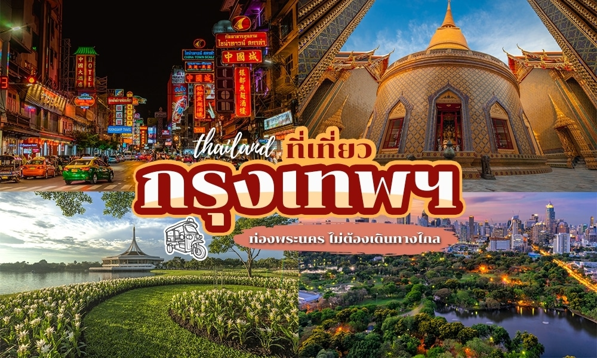
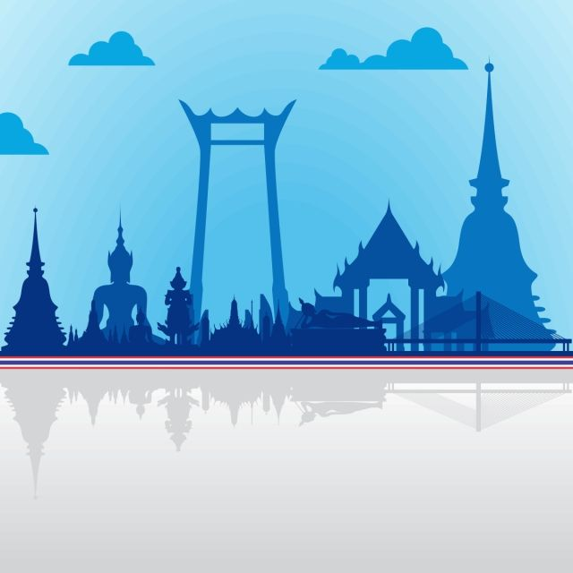

_01.png)
_02.png)
_03.png)
_04.png)
_05.png)
_06.png)
|  | “กรุงเทพมหานคร” เมืองหลวงของประเทศไทย เป็นเมืองหลวงที่มีชื่อยาวที่สุดในโลก มีแม่น้ำสายสำคัญไหลผ่าน คือ แม่น้ำเจ้าพระยา แบ่งเมืองออกเป็น 2 ฝั่ง คือ ฝั่งพระนคร และฝั่งธนบุรี มีนักท่องเที่ยวจากทั่วโลกเดินทางมาท่องเที่ยวมากมาย ประเทศไทยของเราก็สวยงามใช่น้อย สถานที่ท่องเที่ยวของประเทศไทยทั่วทุกภาคก็มีเยอะมาก ถ้าจะเที่ยวมันก็ต้องใช้เวลา เที่ยวไกลๆ ออกต่างจังหวัด จะลา จะหยุด ก็ไม่สะดวก เช็คอินชิลล์ เลยจะมาแนะนำ 38 สถานที่ท่องเที่ยวในเมืองหลวงของเรากันค่ะ แบบวันเดียวก็เที่ยวได้ แถมไม่ต้องขับรถไปไกลๆ อีกด้วย |
 |
กรุงเทพมหานคร มาจากนามพระราชทาน " กรุงเทพมหานคร อมรรัตนโกสินทร์ มหินทรายุธยา มหาดิลกภพ นพรัตนราชธานีบูรีรมย์ อุดมราชนิเวศน์มหาสถาน อมรพิมานอวตารสถิต สักกะทัตติยวิษณุกรรมประสิทธิ์" มีความหมาย "เมืองของเทวดา มหานครอันเป็นอมตะ สง่างามด้วยแก้ว 9 ประการ และเป็นที่ประทับของพระเจ้าแผ่นดิน เมืองที่มีพระราชวังหลายแห่ง ดุจเป็นวิมานของเทวดา ซึ่งพระวิษณุกรรมสร้างขึ้นตามบัญชาของพระอินทร์" ปัจจุบันภาษาราชการเรียก กรุงเทพมหานคร และอย่างย่อว่า กรุงเทพฯ |
|  | กรุงเทพมหานคร หลายคนต้องนึกถึง เมืองใหญ่ ที่มี แม่น้ำเจ้าพระยา ไหลผ่านกลางใจเมือง เต็มไปด้วยวัดวาอารามที่สวยงาม ย่านธุรกิจที่คึกคัก เลยทีเดียว ตามเรามารู้จัก กรุงเทพฯ |
_09.png)